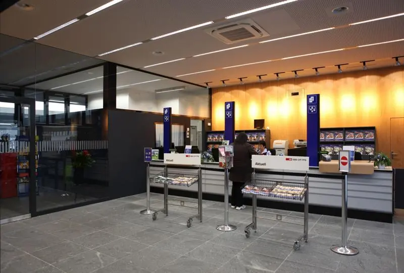

Projekt 258 · Reisen
Bahnhof SBB Zürich-Altstetten
Umbau einer denkmalgeschützten Bau-Ikone von 1966
Umbau der Verkaufs- und Büroräumlichkeiten der SBB im denkmalgeschützten Bahnhofs Zürich-Altstetten (Baujahr 1966) von Max Vogt.

- Verfahren
- Direktauftrag
- Status
- Realisiert
- Fertigstellung
- 2008
- Bearbeitung
- Vorprojekt bis Ausführung
- Bauherr
- SBB AG, Bern
- Kosten
- 1.49 Mio. Fr. (BKP 2), 1.98 Mio. Fr. (BKP 1-5)
- Bauzeit
- Mai-November 2007, 7 Monate
- Adresse
- Altstetterplatz 12, Zürich
Der Bahnhof Altstetten von 1968 ist bisher als einziges Gebäude des Architekten Max Vogt in einem Denkmalinventar aufgeführt. Die Neugestaltung von Innenraum und Fassade hat zum Ziel den Planungsgrundsätzen von Max Vogt möglichst gerecht zu werden. Die Einordnung neuer Nutzungen stellte hohe gestalterische Anforderungen. Die Raumaufteilung folgt einem unsichtbaren, von Vogt vorgegebenen Raster. Die alte Grosszügigkeit der Halle wird durch die bis zur Decke reichenden Glaselemente erhalten. Die ursprüngliche Grösse lässt sich durch die Weiterführung der Akustik-Flachdecke über die Hintergrundarbeitsplätze erleben. Die Rückwand mit Holztäfelung, ein Gestaltungselement von Vogt, wurde an der gleichen Stelle wieder eingesetzt.
Die offenen Reisebüro- und Billetverkaufsdesks können durch die transparente, abschliessbare Raumaufteilungen zeitlich unabhängig geöffnet werden.
Mit einem «sonnigen» Farbakzent wurde die Zone des Reisebüros hervorgehoben. Bodenbelag und Deckenstruktur konnten weitgehend erhalten oder im ursprünglichen Charakter neu erstellt werden. Die neue Beleuchtung unterstreicht die Strenge der Architektur. Energetisch konnte der umbaute Raum ohne Auswirkungen auf den schützenswerten Bestand nachgerüstet werden. Durch das Herausschneiden von Betonelementen in der Fassade wurde mehr Tageslicht in die zum Teil mit neuen Funktionen belegten Räume geleitet. Die neuen Fenster folgen den Vorgaben des Vogtbaues. Den heutigen Möglichkeiten entsprechend sind die Fenster jedoch grossflächiger gestaltet.
Projektteam
- Bauherrenvertretung
- SBB AG
- Architekt
- apb architekten ag, Uster
- Projektleiter
- Peter Brader
- Bauleiter
- Daniel Dammann
- Bauingenieur
- Dürler Ingenieurbüro, Sulzbach
- Elektroingenieur
- IBG B. Graf AG, Winterthur
- HLKS Ingenieur
- Gerber Haustechnik, Volketswil
- Bauphysik
- IPA-Energieberatung, Volketswil
- Akustik
- Wichser Akustik & Bauphysik AG, Zürich